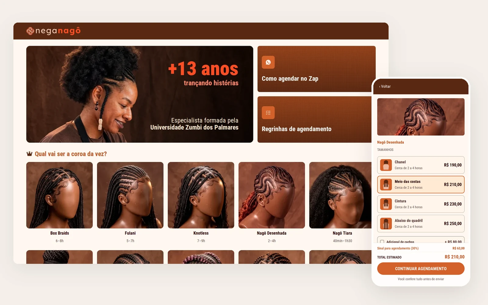
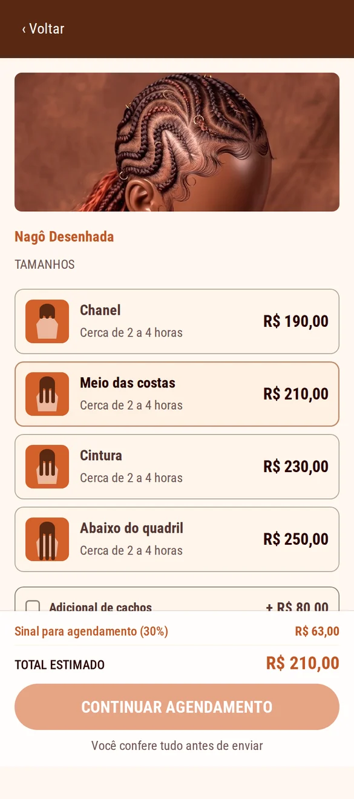
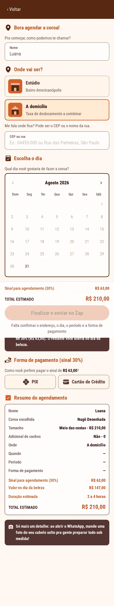
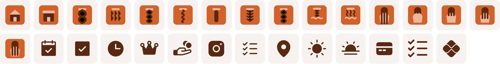
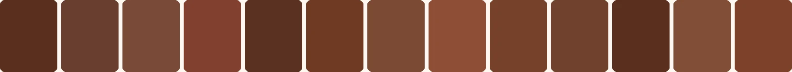

A Nega Nagô trança há treze anos em São Paulo. O catálogo dela era um print. Fiz a pesquisa, o desenho das telas, o design system e o código que entrega tudo isso.
Nega Nagô has been braiding in São Paulo for thirteen years. Her catalogue lived as a screenshot. I did the research, the screens, the design system and the code that ships it.
Sobre os números. Produto entregue e em operação. Os resultados vieram da agenda da Maiara depois do lançamento — são medição, não projeção. A seção de números diz como cada um foi apurado.
About the numbers. Shipped and running. The results come from Maiara's own booking calendar after launch — measured, not projected. The numbers section explains how each one was obtained.

Treze categorias de trança e mais de quarenta combinações de tamanho e preço, tudo em texto corrido dentro de uma imagem enviada no direct.
Thirteen braid categories and more than forty size-and-price combinations, all as running text inside an image sent over DM.
A cliente abria o print, não achava o preço do tamanho que queria e perguntava. A Maiara respondia entre um atendimento e outro, às vezes horas depois. Cada pergunta virava uma conversa de ida e volta antes de existir qualquer agendamento.
O problema não era a tabela estar errada. Era ela exigir uma segunda pessoa para ser lida.
The client would open the screenshot, fail to find the price for the size she wanted, and ask. Maiara answered between appointments, sometimes hours later. Every question turned into a back-and-forth before any booking existed.
The list wasn't wrong. It just needed a second person to be read.
É a imagem mais importante da página: mostra o antes de verdade. Corte os dados pessoais e suba aqui.
The most important image on the page — it shows the real "before". Crop out personal data and drop it in.
midia/antes-tabela.webp · ~1200 × 1600O mesmo objetivo — agendar uma trança — pelos dois caminhos. O que sai não é tela: é o tempo morto entre a dúvida e a resposta.
Same goal — book a braid — down both paths. What gets removed isn't screens: it's the dead time between question and answer.
Os passos 3, 4 e 5 dependem da agenda da Maiara. É onde o interesse esfria.
Steps 3, 4 and 5 depend on Maiara's schedule. That's where interest cools off.
Nenhum passo espera resposta. A Maiara entra na conversa com tudo já decidido.
No step waits for a reply. Maiara enters the conversation with everything already decided.

1. Preço e sinal aparecem junto do tamanho, e mudam conforme a escolha.Price and deposit sit next to the size, updating as she chooses.

2. Dia, período, forma de pagamento e endereço numa tela só, com o resumo sempre visível.Day, slot, payment and address on one screen, with the summary always visible.
Nenhuma dessas escolhas saiu de intuição de UX. Saíram de como ela cobra, de onde a cliente já está e do que o piloto podia bancar.
None of these came from UX intuition. They came from how she charges, where the client already is, and what the pilot could afford.
Ela compra o material antes de cada atendimento.
She buys the hair before each appointment.
Sem adiantamento, o dinheiro sai do bolso dela.
Without a deposit, the money comes out of her pocket.
O sinal de 30% aparece calculado em toda tela de preço, junto do total. Nunca no fim, como surpresa.
The 30% deposit is computed on every price screen, right beside the total. Never at the end, as a surprise.
A cliente já está no WhatsApp quando decide.
The client is already on WhatsApp when she decides.
Levar ela para um checkout fora dali cria mais um lugar para desistir.
Moving her to an outside checkout just adds a place to drop off.
O fluxo termina dentro do WhatsApp. O site escreve a mensagem inteira; ela só aperta enviar.
The flow ends inside WhatsApp. The site writes the whole message; she just hits send.
O adicional custa diferente conforme a família de trança.
The add-on costs differently depending on the braid family.
Um valor único estaria errado em metade do catálogo.
A single flat price would be wrong for half the catalogue.
Um campo addon por estilo. Cachos a R$ 80 nas nagô, R$ 120 nas box braids, jumbo a R$ 80 no masculino. Quem não tem a opção não vê o campo.
One addon field per style. Curls at R$ 80 for nagô, R$ 120 for box braids, jumbo at R$ 80 for men's. Styles without the option never show the field.
Ela atende no estúdio e a domicílio.
She works both from her studio and at clients' homes.
Endereço só faz sentido num dos dois casos.
An address only makes sense in one of the two.
O bloco de endereço só existe na tela quando "a domicílio" está marcado — com busca por CEP ou rua, e confirmação antes de seguir.
The address block only exists on screen when "at home" is selected — with postcode or street lookup, and a confirm step.
Sem gateway de pagamento no piloto.
No payment gateway in the pilot.
O site não pode cobrar nada.
The site can't charge anything.
O site calcula e informa; a cobrança acontece na conversa. A mensagem já sai com a divisão exata: sinal agora, resto no dia.
The site computes and informs; the charge happens in the chat. The message already carries the split: deposit now, rest on the day.
O fluxo não é o desenho ideal. É o desenho que cabe no jeito que ela já trabalha.
This flow isn't the ideal design. It's the design that fits how she already works.
Testei em dois momentos separados de propósito. Primeiro um HTML de rascunho em tons de cinza — sem cor, sem logo, sem foto. Só o caminho. Depois o protótipo com a identidade inteira.
I ran two rounds, deliberately apart. First a grey-scale draft in raw HTML — no colour, no logo, no photography. Just the path. Then the prototype with the full identity.
Dá para chegar ao fim? A informação aparece na hora que a pessoa precisa dela? Sem identidade visual, o que sobra na tela é a estrutura — e é ela que está sendo testada.
Can she get to the end? Does the information show up when she needs it? With no visual identity on screen, what's left is the structure — and that's what's under test.
O encantamento veio aqui, como era de esperar. A diferença é que ele estava sentado em cima de um fluxo que já tinha andado sozinho, sem cor para carregar.
Delight showed up here, as expected. The difference is that it was sitting on top of a flow that had already walked on its own, with no colour to carry it.
Testar tudo junto mistura duas perguntas. Se a pessoa gostou, foi do fluxo ou da marca? Em cinza a resposta não tem para onde fugir.
Testing it all at once blends two questions. If she liked it, was it the flow or the brand? In grey the answer has nowhere to hide.
Escolhi quatro perfis para cobrir o funil inteiro, em vez de quem estivesse à mão. As quatro fazem ou já fizeram tranças em outros lugares e passaram por vários jeitos de agendar — link, tabela em PDF, conversa solta no direct. Não estavam comparando com nada: estavam comparando com o que já usaram.
I picked four profiles to cover the whole funnel, rather than whoever was around. All four get their hair braided elsewhere too, and have been through several ways of booking — links, PDF price lists, loose DM threads. They weren't comparing this to nothing: they were comparing it to what they already use.
Já agenda com a Maiara e sabe os preços de cor. Serve para ver se o fluxo atrapalha quem já tem o caminho na cabeça.
Already books with Maiara and knows the prices by heart. Tests whether the flow gets in the way of someone who knows the path already.
Pediu preço e não voltou. É exatamente o perfil que o projeto existe para recuperar.
Asked for a price and never came back. Exactly the profile this project exists to win back.
Conhece o serviço mas não virou hábito. Mostra o que falta para a segunda vez acontecer sozinha.
Knows the service but never made it a habit. Shows what's missing for a second booking to happen on its own.
Chega sem referência nenhuma — nem de preço, nem de vocabulário. É quem revela o que a tela precisa explicar sozinha.
Arrives with no reference at all — not price, not vocabulary. She reveals what the screen has to explain by itself.
A conta recalcula a cada toque. Muda o tamanho, muda o adicional, muda o local — o total e o sinal mudam junto, na mesma tela, sem precisar avançar para descobrir. A cliente sai sabendo quanto vai adiantar agora e quanto sobra para o dia.
The maths recalculates on every tap. Change the length, the add-on, the location — the total and the deposit move with it, on the same screen, with nothing to advance through to find out. She leaves knowing what she pays now and what's left for the day.
Quando ela chega para fechar, nada daquilo é novidade. E o que não é novidade não vira objeção.
By the time she's closing, none of it is news. And what isn't news doesn't turn into an objection.
É a primeira restrição da seção anterior fechando o ciclo. A Maiara compra o material antes, então precisa dos 30% adiantados. Essa trava do negócio é o que virou o elogio mais repetido da pesquisa — a limitação virou o argumento.
This is the first constraint from the previous section closing the loop. Maiara buys the hair up front, so she needs the 30% deposit. That business constraint is what turned into the most repeated compliment in the research — the limitation became the argument.
Esta é a saída real do produto — o texto que a cliente envia, gerado a partir do que ela escolheu. É o único artefato que sai do site e chega na Maiara.
This is the product's actual output — the text the client sends, generated from what she picked. It's the only artefact that leaves the site and reaches Maiara.
A Maiara não vai abrir um painel entre um atendimento e outro. Ela vive no WhatsApp. A mensagem chega no lugar onde ela já responde, com a divisão de valores pronta para conferir.
Maiara won't open a dashboard between appointments. She lives in WhatsApp. The message lands where she already replies, with the money split ready to check.
A tela chama o penteado de coroa, não de "serviço" nem de "item". É a palavra que ela e as clientes usam. O sistema se adaptou ao vocabulário, não o contrário.
The interface calls the hairstyle a coroa — crown — not a "service" or an "item". It's the word she and her clients use. The system adapted to the vocabulary, not the other way round.
Oi, Nega Nagô! Vim pelo site e quero agendar 💛 *Nagô Desenhada* — Meio das costas Duração estimada: cerca de 2 a 4 horas Adicional de cachos: sim (+ R$ 80,00) *Meus dados* Nome: Luana Local: A domicílio Endereço: Rua Tenente Ary Aps, 123 — Apto 42 Dia: 14 de setembro Período: Manhã *Valores* Total estimado: R$ 290,00 Sinal agora (30%): R$ 87,00 via Pix No dia da beleza: R$ 203,00 Já vou mandar a foto do meu cabelo solto!
Saída real do protótipo, gerada em enviarZap().
Real prototype output, generated in enviarZap().
A última linha já oferece a foto do cabelo solto, que a trancista precisa ver para estimar o trabalho. É uma ida e volta a menos.The last line already offers the photo of loose hair, which the braider needs in order to size up the job. One round trip fewer.
Quase todo fluxo de IA em design anda numa direção só: ou gera tela a partir de prompt, ou gera código a partir do design. Aqui a estrutura sai do Claude para o Figma via MCP, evolui como design de verdade, e volta para o Claude virar o HTML que está no ar.
Most AI design workflows run one way: either screens from a prompt, or code from a design. Here the structure goes from Claude into Figma over MCP, evolves as actual design work, and comes back to Claude to become the HTML that's live.
Antes de qualquer tela: o problema, o fluxo, o vocabulário da trancista, a tabela de preços inteira e as restrições do negócio. Sai escrito, não desenhado.
Before any screen: the problem, the flow, the braider's vocabulary, the full price table and the business constraints. It comes out written, not drawn.
Decisão minha · o que entra e o que fica de fora My call · what's in and what's outA estrutura vira frame, componente e token dentro do arquivo, sem eu redesenhar à mão o que já estava decidido.
The structure becomes frames, components and tokens inside the file, without me redrawing by hand what was already decided.
É aqui que o design acontece. Quatro níveis de fidelidade, cada um resolvendo uma pergunta diferente — e é a versão de baixa, em cinza, que foi para a primeira rodada de teste.
This is where the design happens. Four fidelity levels, each answering a different question — and it's the low-fidelity grey version that went into the first round of testing.
Decisão minha · hierarquia, ritmo, estados, identidade My call · hierarchy, rhythm, states, identityO protótipo final volta como fonte da verdade — geometria, cor e texto lidos do arquivo, não descritos de memória.
The final prototype comes back as the source of truth — geometry, colour and copy read from the file, not described from memory.
O código que está no ar. E, depois dele, a suíte que compara o resultado de volta contra o Figma por medição — o mesmo ciclo, agora como controle de qualidade.
The code that's live. And after it, the suite that measures the result back against Figma — the same loop, now as quality control.
Decisão minha · o que é fiel e o que precisa ceder My call · what stays faithful and what has to giveNum fluxo de mão única, o arquivo do Figma morre no handoff: vira imagem de referência que desatualiza no primeiro ajuste de código. Fechando o ciclo, ele continua sendo a fonte — e a suíte de medição prova, número a número, que o que está no ar é o que está no arquivo.
In a one-way flow the Figma file dies at handoff: it becomes a reference image that goes stale on the first code tweak. Closing the loop keeps it as the source — and the measurement suite proves, number by number, that what's live is what's in the file.
Ela move artefato entre etapas e executa o que já foi definido. As três decisões que sustentam este projeto — o sinal na tela, o fim dentro do WhatsApp, o vocabulário da trancista — saíram de conversa com a Maiara e de teste com quatro pessoas, não de prompt.
It moves artefacts between stages and executes what's already been decided. The three decisions this project rests on — the deposit on screen, ending inside WhatsApp, the braider's vocabulary — came from talking to Maiara and testing with four people, not from a prompt.
Nenhuma foto existia. A direção criativa saiu no Claude, a partir de referências reais, e virou um contrato visual escrito — manequim, ângulo, fundo, luz, matiz alvo. Cada prompt é esse contrato com uma linha trocada. A geração foi no Higgsfield com o Nano Banana 2.
No photos existed. The art direction came out of Claude, from real references, as a written visual contract — mannequin, angle, backdrop, light, target hue. Each prompt is that contract with one line swapped. Generation ran in Higgsfield with Nano Banana 2.
A seção 09 mostra o resultado e a medição que prova a coerência entre as treze fotos.
Section 09 shows the result and the measurement that proves consistency across the thirteen photos.
Nove conjuntos de componentes, 36 variantes, 29 ícones e dois breakpoints. Os nomes das variáveis no Figma são os mesmos nomes das custom properties no CSS.
Nine component sets, 36 variants, 29 icons, two breakpoints. Variable names in Figma match the CSS custom property names one to one.

Os 29 ícones. Os de catálogo — tamanho, modelo, local — são coloridos e viram ilustração dentro das linhas de opção. Os de interface herdam currentColor, então mudam de cor junto do estado do componente.All 29 icons. Catalogue icons — size, model, location — stay multicolour and act as illustration inside option rows. UI icons inherit currentColor, so they recolour with the component state.
Um GIF ou MP4 curto percorrendo default → hover → pressed → disabled no botão, no chip e na linha de opção. É o que prova que o sistema tem estado, e não só cor.
A short GIF or MP4 cycling default → hover → pressed → disabled on the button, the chip and the option row. It's what proves the system has states, not just colours.
midia/componentes.mp4 · 1200 × 675 · ~6 s em loopEscrevi uma suíte em Playwright que abre o protótipo nos dois breakpoints e lê o valor computado de cada gap, largura e altura. Quatro erros que pareciam certos na tela apareceram assim.
I wrote a Playwright suite that opens the prototype at both breakpoints and reads the computed value of every gap, width and height. Four bugs that looked fine on screen surfaced this way.
1fr → minmax(0,1fr)No grid do catálogo, o nome mais longo — "Nagô Desenhada" — esticava a própria coluna e espremia as vizinhas. Na tela passava por diferença de foto. Era o track dimensionado pelo conteúdo.
In the catalogue grid, the longest name — "Nagô Desenhada" — stretched its own column and squeezed its neighbours. On screen it read as a photo difference. It was content-based track sizing.
O container usava margin:0 auto dentro de um pai em flex. Margem automática num filho flex cancela o stretch, então a hero encolhia até o tamanho do conteúdo em vez de ocupar o breakpoint. Só apareceu porque eu estava comparando números com o Figma.
The container used margin:0 auto inside a flex parent. An auto margin on a flex child cancels stretch, so the hero shrank to content width instead of filling the breakpoint. It only surfaced because I was comparing numbers against Figma.
[hidden] perdendo para a classelosing to the classO bloco de endereço recebia o atributo hidden corretamente, mas .end{display:flex} ganhava do padrão do navegador e ele continuava visível. Uma linha — [hidden]{display:none!important} — consertou também três outros lugares que estavam quebrados em silêncio.
The address block got the hidden attribute correctly, but .end{display:flex} beat the browser default and it stayed visible. One line — [hidden]{display:none!important} — also fixed three other places that were silently broken.
Abri no meu celular, que fica em modo noturno, e a paleta da marca estava toda trocada. O Android repinta por conta páginas que não declaram esquema de cor. color-scheme:light mais a meta tag travaram. Verifiquei rodando o mesmo teste com o navegador em modo escuro e comparando 18 propriedades computadas antes e depois.
I opened it on my own phone, which runs in dark mode, and the brand palette was inverted. Android repaints pages that don't declare a colour scheme. color-scheme:light plus the meta tag locked it. I verified by running the same test with the browser in dark mode and diffing 18 computed properties before and after.
HTML, CSS e JavaScript num arquivo só. Nada para instalar, nada para buildar, nada para quebrar quando uma dependência sobe de versão. Para um piloto de uma pessoa, isso é a escolha certa.
HTML, CSS and JavaScript in a single file. Nothing to install, nothing to build, nothing to break when a dependency bumps. For a one-person pilot, that's the right call.
Com as treze fotos carregadas. Converti as 46 imagens de PNG para WebP e o conjunto caiu de 17 MB para 1,9 MB. A cliente abre no 4G, não no wi-fi do escritório.
With all thirteen photos loaded. I converted the 46 images from PNG to WebP and the set dropped from 17 MB to 1.9 MB. The client opens this on 4G, not office wi-fi.
Mede gaps, simula o arraste do carrossel com eventos de ponteiro, intercepta a API de CEP com resposta falsa e percorre agendamento até o botão final — nos dois breakpoints, a cada mudança.
It measures gaps, simulates carousel dragging with pointer events, intercepts the postcode API with a stub, and walks the booking to the final button — at both breakpoints, on every change.
Não havia sessão, modelo nem banco de imagem que servisse. Fechei um contrato visual — manequim, ângulo, fundo, luz, matiz — usei o Claude para escrever os prompts a partir dele e gerei no Higgsfield com o Nano Banana 2.
There was no shoot, no model and no stock library that fit. I locked a visual contract — mannequin, angle, backdrop, light, hue — used Claude to write the prompts from it, and generated in Higgsfield with Nano Banana 2.
Os treze estilos, na ordem em que aparecem na Home.All thirteen styles, in the order they appear on the Home.

Cor média do fundo, uma amostra por estilo.Average backdrop colour, one sample per style.
Amostrei os quatro cantos de cada foto e converti para matiz. Os treze fundos caem entre 12,4° e 19,2° — amplitude de 6,8° em treze gerações independentes. O terracota da marca é 19,2°, o marrom é 18,6°.
Não foi sorte: o matiz alvo estava escrito no prompt. A prova pelo contrário está no mesmo dado — a luminosidade, que eu não pedi como número, abriu de 35% a 56%.
I sampled the four corners of each photo and converted to hue. All thirteen backdrops land between 12.4° and 19.2° — a 6.8° spread across thirteen independent generations. The brand terracotta is 19.2°, the brown 18.6°.
Not luck: the target hue was written into the prompt. The counter-proof sits in the same data — brightness, which I did not specify as a number, spread from 35% to 56%.
Um render, três recortes. 860 × 367 para a faixa no celular, 624 × 560 para o produto no desktop, 300 × 300 para o card da Home. Quando a Maiara fotografar de verdade, cada foto entra no lugar de uma, com os mesmos nomes de arquivo. Nada no código muda.One render, three crops. 860 × 367 for the mobile banner, 624 × 560 for desktop product, 300 × 300 for the Home card. When Maiara shoots for real, each photo replaces one, same filenames. Nothing in the code changes.
Os números do produto qualquer pessoa reproduz rodando a suíte. Os da operação vieram da agenda da Maiara, comparando o antes e o depois do lançamento.
Anyone can reproduce the product numbers by running the suite. The operational ones come from Maiara's booking calendar, comparing before and after launch.
Abra o repositório e rode a suíte: todos saem iguais.
Open the repo and run the suite: every one of these comes out the same.
Da agenda dela, não de modelo. O intervalo de confiança e o valor-p foram calculados sobre os agendamentos observados antes e depois do lançamento.
From her calendar, not from a model. The confidence interval and p-value were computed on the bookings observed before and after launch.
Os dias ocupados estão fixos no código. Integrar a Google Agenda da Maiara é o próximo passo, e é o que separa um protótipo de uma ferramenta que ela usa toda semana.
Busy days are hard-coded. Wiring up Maiara's Google Calendar is the next step, and it's what separates a prototype from a tool she uses every week.
O ambiente onde desenvolvi bloqueia as APIs de CEP e de mapa. A busca funciona contra respostas simuladas e tem queda controlada para entrada manual, mas ainda precisa de um teste contra a rede real.
My development environment blocks the postcode and map APIs. The lookup works against mocked responses and degrades gracefully to manual entry, but it still needs a test against the live network.
São renders de referência, não portfólio da Maiara. Está escrito nesta página, mas precisa estar escrito no produto — que já está no ar com cliente. É a pendência mais urgente da lista.
They're reference renders, not Maiara's portfolio. It's written on this page, but it needs to be written in the product — which is already live with clients. This is the most urgent item on the list.
A amostra cobre o funil e as sessões foram em dois momentos, mas quatro pessoas acham o que trava todo mundo, não o caso raro que aparece na centésima cliente. Com o fluxo em operação, o próximo passo é observar uso real em vez de sessão marcada.
The sample covers the funnel and the sessions ran in two rounds, but four people find what blocks everyone, not the rare case that shows up on the hundredth client. With the flow in operation, the next step is observing real use instead of scheduled sessions.
midia/proj-2.webp · 1200 × 750
Troque o título e escreva uma linha de valor — o que o projeto resolve, não o que ele é.
Swap the title and write one value line — what the project solves, not what it is.
midia/proj-3.webp · 1200 × 750
Duas linhas no máximo. Quem lê está decidindo se clica, não lendo o case.
Two lines max. Whoever reads this is deciding whether to click, not reading the case.